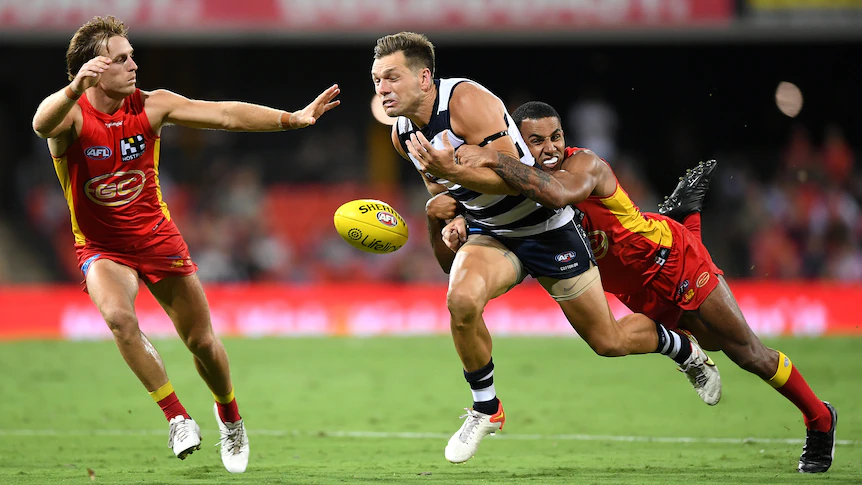
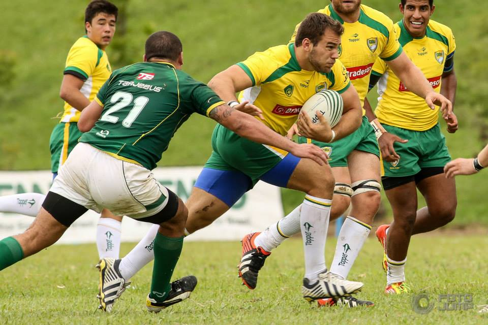
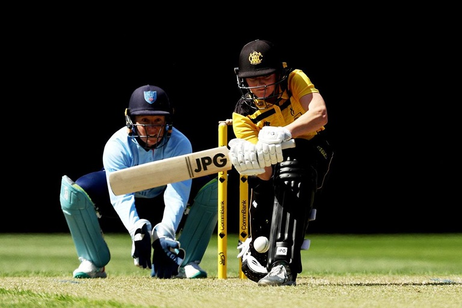
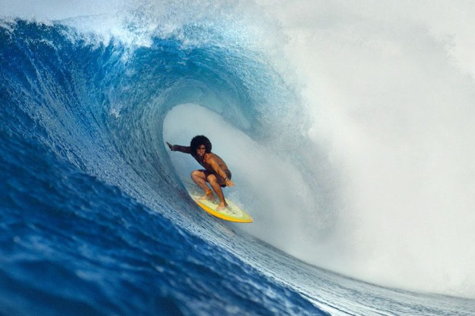

O esporte é muito comum no cotidiano das pessoas, se não é prticando, é sempre acompanhando pelo celular, telivisão, rádio e outros. Mas normalmente nosso conhecimento é restrito a esportes que são mais populares no nosso próprio país, sem saber que existem milhares de outros que são tão importantes quanto. Você sabe quais são? Não? Então venha descobrir os quatro mais famosos esportes da Austrália.
AFL ou Australian Football League

Quando falamos dos esportes autralianos, não podemos não citar o AFL, que é o esporte mais famoso do país. Ele é disputado por duas equipes com 18 jogadores cada, em quatro tempos de 20 minutos. Tanto a bola quanto o campo são em formatos ovais. O jogo e praticado com a na mão, batendo-a no chão a cada 15 metros. Os passos são feitos por chute ou esmurrando a bola para o outro jogador e os pontos são marcados chutando-se a bola entre as traves, no trajeto a bola não pode tocar em nenhum outro jogador nem no chão. Existem 2 tipos de pontos: Goal que vale como seis pontos e o Behind, que vale como um ponto só.
Uma curiosidade desse jogo é que há apenas um brasileiro jogando AFL profissional na Austrália, sendo um carioca.
Rubgy

Muito parecido com o futebol australiano, o objetivo do rúgbi é levar a bola até a linha de gol do rival o máximo de vezes possível. Cada equipe tem 15 jogadores e ganha a que tiver mais pontos ao final de dois tempos de 40 minutos ou de 7 minutos, dependendo da modalidade. A bola utilizada nas partidas de rúgbi tem formato oval e o campo é de formato retangular. No Brasil, o primeiro registro da prática do rugby data de 1891 com a fundação do Clube Brasileiro de Futebol Rugby, no Rio de Janeiro.
Mas vale lembrar que existem dois tipos de Rugby: o Rugby Union e o Rugby League.
Cricket

O cricket é formado por 11 jogadores: dois rebatedores, os batsmen, e onze fielders no campo. A bola usada para jogar é uma dura feita de cortiça e couro, um pouco maior que uma bola de tênis. O campo é circular ou oval, delimitado por uma corda ou marcado por cal. O críquete pode ser disputado em três formatos, os quais variam em sua duração: T2 (3h), One-Day (8h) e Test cricket (5 dias). Seu objetivo, portanto, é marcar mais corridas do que o adversário, sendo essas corridas contabilizadas por overs (quantidade de corridas).
Há mais de cem anos, os trabalhadores da Ferrovia “British railway” que trabalhavam na construção de Ferrovias nas regiões sul e norte do Brasil, introduziram o cricket no país. Ele se tornou um esporte popular entre as crianças brasileiras que desenvolveram uma versão simplificada, chamada de “bete” ou “taco”.
Surf

Surfe é um esporte individual e radical praticado no mar. Nele o desafio é se manter o maior tempo possível em pé sob uma prancha, deslizando sob as ondas e realizando manobras radicais, com vários níveis de dificuldade. As manobras mais radicais do surfe são tubo e aéreo, mas existem outras como 360°, cut-back, rasgada, cavada, batida e floater. Existem duas linhas no surfe: a clássica, que da mais importância ao estilo em detrimento à força, e a moderna, que dá mais importante a força e a radicalidade do que o estilo.
O Brasil é o país que mais conquistou títulos do Circuito Mundial de surfe masculino desde que a WSL (Liga Mundial de Surfe), a entidade que organiza o campeonato, mudou de nome em 2015.
Muito diferente, não? Agora que você já conhece um pouco dos esportes australianos quer saber mais sobre o de outros países?
Leia também: Esportes Chineses
Os esportes mais Populares dos EUA
Esportes brasileiros